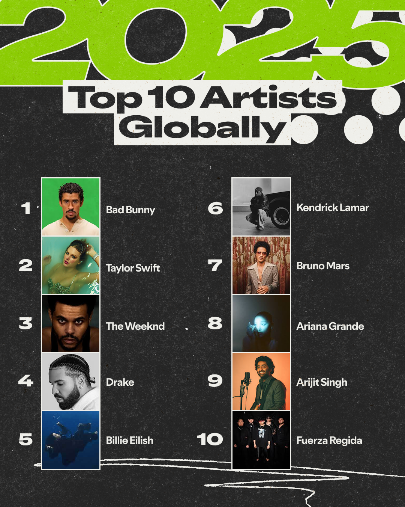
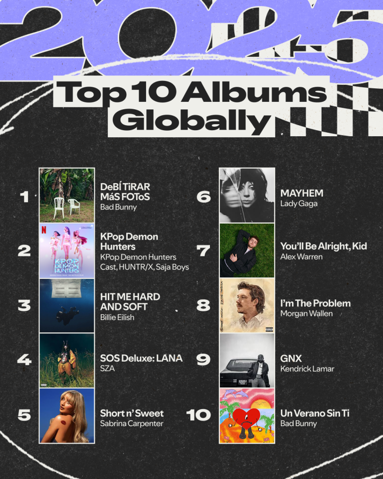
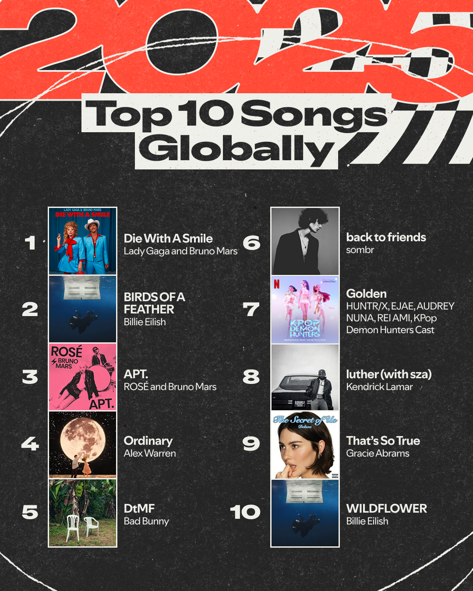

In 2025, music success isn’t just about talent — it’s driven by streaming culture, viral moments, and collaboration.
This project explores the most popular artists, albums, and songs of 2025 using streaming data from Spotify. By looking at trends across charts, we can better understand what defines success in today’s music industry.
This chart shows which artists dominate streaming in 2025. A clear pattern emerges: a small group of repeat artists appear across multiple rankings, suggesting strong platform-driven popularity rather than one-off hits.
Album rankings show that many top artists also dominate here, reinforcing strong fan bases and streaming loyalty.
Viral trends, short-form video platforms, and collaborations heavily influence the most popular songs of 2025.
Spotify's Wraps from the Top Music of 2025 analysis.


